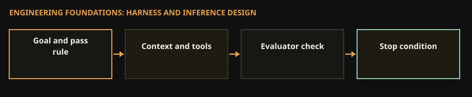
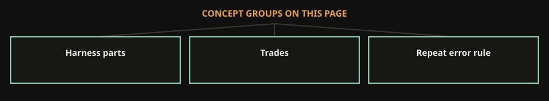

Engineering foundations: harness and inference design
An agent is a model plus a scaffold. This page names each scaffold part, its failure mode, and a test you can run.

Harness parts
| Part | Purpose | Failure mode | Observable sign |
|---|---|---|---|
| Goal | Names the outcome and the pass rule | Vague goal, agent picks own target | Work drifts, pass claims with no test |
| State | Holds task steps, decisions and open points | State lives in chat only | A reset loses the plan |
| Context | Supplies facts at need time | Too much stale text, too little key fact | Agent cites old data or misses a rule |
| Model | Reasons and writes | Weak model on a hard plan step | Plan errors repeat across samples |
| Tools | Act on files, web, tests and apps | Tool errors pass in silence | Steps claim done with no artifact |
| Policy | Limits acts, spend and rights | No gate on hard to reverse acts | Send or delete acts run with no tap |
| Evaluator | Checks output vs a firm rule | Agent grades own work | Pass claims rise, defects stay |
| Stop condition | Ends a loop | No cap on rounds or cost | Loops run long with no gain |
Model, effort, context, cache and parallel work
A strong model cuts re prompt rounds on hard steps. High reason effort costs time and tokens, and pays on plan and debug steps. Large context holds more facts and adds noise and cost. Cache hits cut repeat cost where a product offers cache reads, as in the Grok 4.7 price split on the Grok page. Parallel work cuts wall time and adds merge and review load. Measure each trade on your own task set. No source in this build gives a universal gain number.
Why repeat samples repeat one error
One model with one context holds one set of false beliefs. A fresh sample from that same state tends to keep the belief. New evidence breaks the loop: a test result, a source, a screenshot or a fresh context reviewer. Add a sample for breadth. Add evidence for truth.
Single agent vs multi agent
| Form | Cost | Best use | Risk |
|---|---|---|---|
| Single agent, one worktree | Low | Tight tasks, one file set, clear tests | Slow on breadth work |
| Writer plus fresh reviewer | Medium | Code and research with a check step | Reviewer needs raw evidence, not a summary |
| Parallel fleet | High, near 15 times chat tokens in the Anthropic research case | Breadth search, many file review, migrations | Merge clashes, attention load |
Reference loop in Python
Copy the loop. Each run writes state, caps steps, stops on a pass from a test the agent cannot edit, and asks a human at hard gates.
from dataclasses import dataclass, field
@dataclass
class Task:
goal: str
state: str = "new"
steps: list = field(default_factory=list)
rounds: int = 0
def run(task, agent, verify, max_rounds=5, needs_human=None):
while task.rounds < max_rounds:
task.rounds += 1
task.state = "work"
result = agent(task) # one bounded step
task.steps.append(result)
ok, proof = verify(result) # test, lint, or eval set
if ok:
task.state = "pass"
return task, proof
if needs_human and needs_human(result):
task.state = "wait_human" # send, pay, merge, delete
return task, proof
task.state = "fail_cap" # stop, log, replan by hand
return task, "round cap hit"
Properties: typed input and output via the Task form, firm state, step cap, check points in the steps list, a human gate, and a clear pass test. Idempotent acts stay a design duty per step: a step that can run twice must check for prior work first.
Worked example
Goal: fix a page slice bug. State: one task, rounds 0. Round 1: agent writes a fail test. Verify: test fails as design. Round 2: agent fixes one line. Verify: full test set passes. Stop: pass at round 2. Lab 1 holds this case in full.
Partial exercise
Add a retry rule to the loop: retry a tool error once, then stop. Fill in the blank: a tool error must set state to ____ and write the error text to ____.
Retrieval question
Which harness part stops a loop with no gain? Answer in the Glossary under Stop condition.

Visual map of this page
Three views of one page: a Mermaid flow for work order, a markmap for concept groups, and a read guide for the flow.
Mermaid source, for offline read
flowchart TD
A[Goal] --> B[State record]
B --> C[Context load]
C --> D[Model step]
D --> E[Tool acts]
E --> F{Evaluator}
F -->|pass| G[Stop: done]
F -->|fail, rounds left| D
F -->|cap hit| H[Stop: replan]How to read the flow diagram. Step 1: start at the left box. Step 2: follow each arrow to the next stage. Step 3: at a branch box, read both paths before a choice. Step 4: a loop arrow means work returns for one more pass vs a test.
Markmap: concepts on this page
- Engineering foundations: harness and inference design
- Harness parts
- Goal
- State
- Context
- Model
- Tools
- Policy
- Evaluator
- Stop rule
- Trades
- Effort vs cost
- Context size vs noise
- Parallel vs merge load
- Repeat error rule
- New sample keeps belief
- New evidence breaks loop
- Harness parts